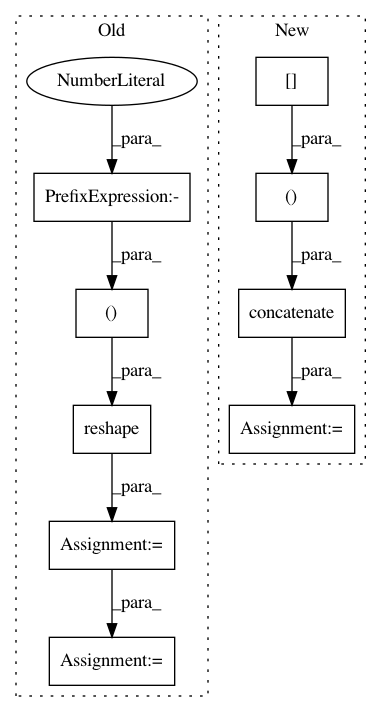

7b0c84ac43d81f2c0d980645e693df8452ce1cb5,nyu_rest_decomposition.py,,,#,13
Before Change
from sklearn.decomposition import FastICA
// X = dataset.func[0][:, :, :, 0]
X_masked_shape = X_masked.shape
X_masked = np.reshape(X_masked.ravel(), (-1, 1))
ica = FastICA()
S_masked = ica.fit(X_masked).transform(X_masked)
S_masked = np.reshape(S_masked.squeeze(), X_masked_shape)
S = np.zeros(X.shape)
S[mask] = S_masked
plt.imshow(S[:, :, 20, 0], interpolation="nearest", cmap=plt.cm.hot)
After Change
// Mask non brain areas
from nisl import mask
X = np.concatenate((
dataset.func[0],
dataset.func[1],
dataset.func[2]),
axis=3)
mean_img = np.mean(X, axis=3)
mask = mask.compute_mask(mean_img)
X_masked = X[mask]
////// Apply requested algorithm //////////////////////////////////////////////////////////////////////////////////////////////////
plt.axis("off")
from sklearn.decomposition import FastICA
X_masked_shape = X_masked.shape
ica = FastICA(n_components=n_components)
S_masked = ica.fit(X_masked).transform(X_masked)
(x, y, z) = mean_img.shape
S = np.zeros((x, y, z, n_components))
S[mask] = S_masked
// Threshold
In pattern: SUPERPATTERN
Frequency: 3
Non-data size: 9
Instances
Project Name: nilearn/nilearn
Commit Name: 7b0c84ac43d81f2c0d980645e693df8452ce1cb5
Time: 2012-06-22
Author: alexandre.abraham@cea.fr
File Name: nyu_rest_decomposition.py
Class Name:
Method Name:
Project Name: nipy/dipy
Commit Name: fa786e5f2a8016725991cf2d02eebe6368dc04b3
Time: 2015-10-15
Author: dimrozakis@gmail.com
File Name: dipy/reconst/dti.py
Class Name:
Method Name: wls_fit_tensor
Project Name: nipy/dipy
Commit Name: 4f3da275037d4fe3108039fdbfc03b2f81fbee8c
Time: 2015-10-15
Author: dimrozakis@gmail.com
File Name: dipy/reconst/dti.py
Class Name:
Method Name: ols_fit_tensor